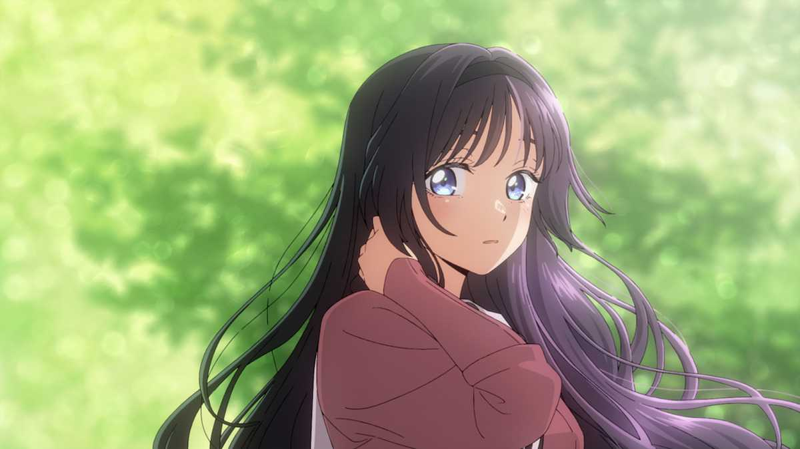
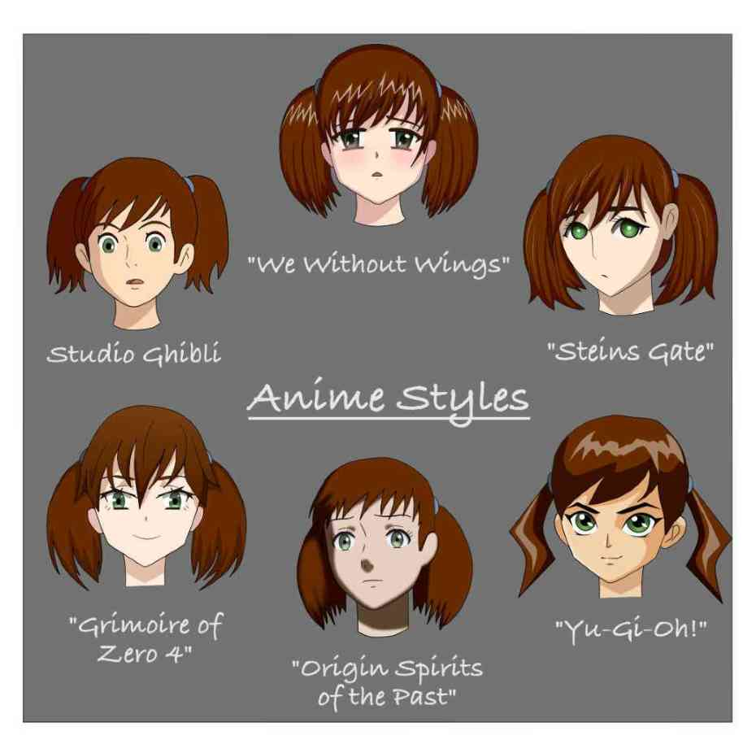
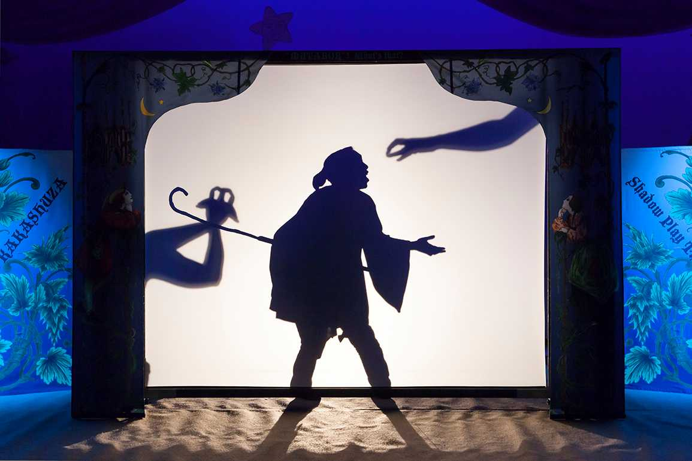
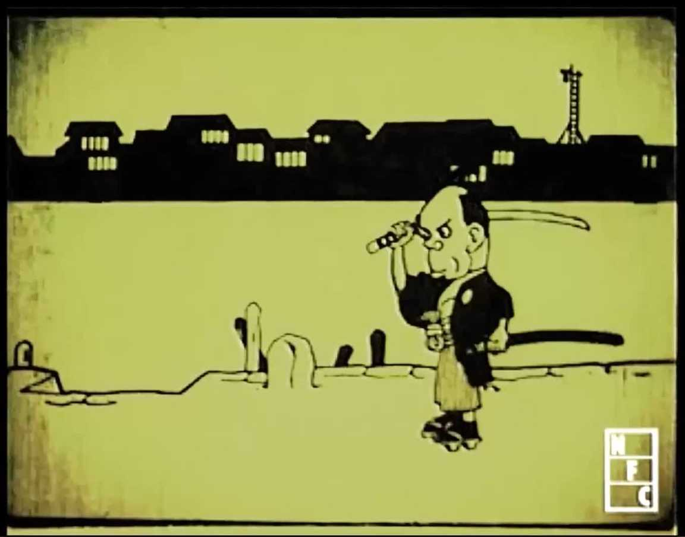
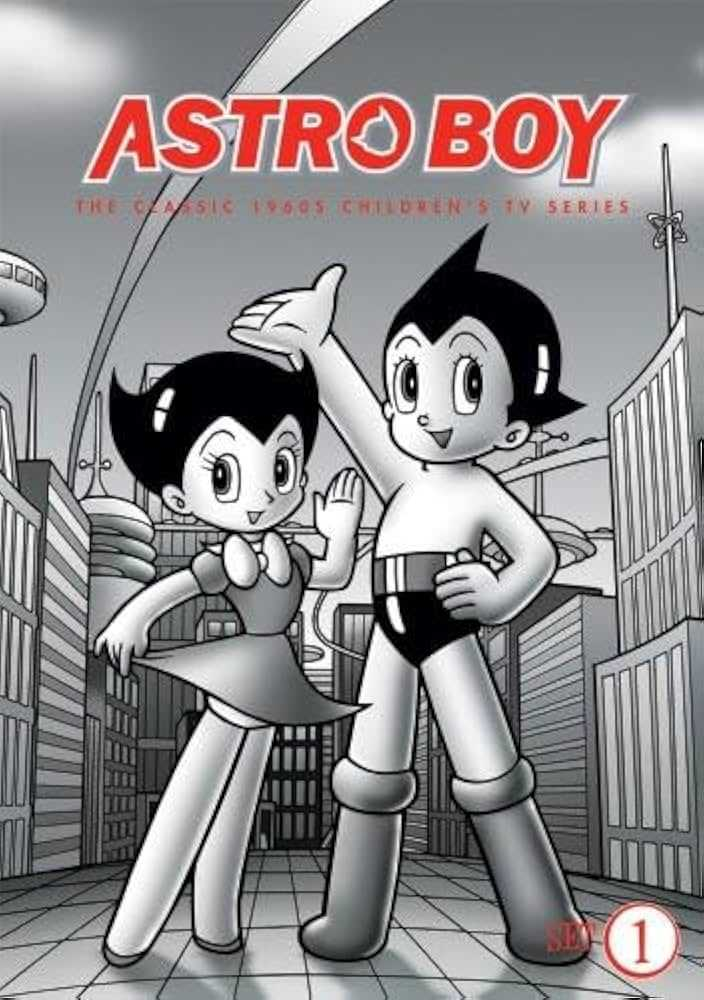

What is Anime?

Anime (derived from a shortening of the English word
animation) is hand-drawn and computer-generated animation originating from Japan. Outside Japan
and in English, anime refers specifically to animation produced in Japan. However, anime, in
Japan and in Japanese, describes all animated works, regardless of style or origin. Many works
of animation with a similar style to Japanese animation are also produced outside Japan. Video
games sometimes also feature themes and art styles that may be labelled as anime.
Attributes of Anime

Anime differs from other forms of animation by its art styles, methods of animation, its
production, and its process. Visually, anime works exhibit a wide variety of art styles,
differing between creators, artists, and studios. While no single art style predominates anime
as a whole, they do share some similar attributes in terms of animation technique and character
design.
Anime is fundamentally characterized by the use of limited animation, flat expression, the
suspension of time, its thematic range, the presence of historical figures, its complex
narrative line and, above all, a peculiar drawing style, with characters characterized by large
and oval eyes, with very defined lines, bright colors and reduced movement of the lips.
Precursors of Anime

Emakimono and shadow plays (kage-e) are considered precursors of Japanese animation. Emakimono
was common in the eleventh century. Traveling storytellers narrated legends and anecdotes while
the emakimono was unrolled from the right to left in chronological order, as a moving panorama.
Kage-e was popular during the Edo period and originated from the shadow plays of China. Magic
lanterns from the Netherlands were also popular in the eighteenth century. The paper play called
kamishibai surged in the twelfth century and remained popular in street theater until the 1930s.
Puppets of the Bunraku theater and ukiyo-e prints are considered ancestors of characters of most
Japanese animation. Finally, manga were a heavy inspiration for anime. Cartoonists Kitzawa
Rakuten and Okamoto Ippei used film elements in their strips.
Pioneers of Anime

Animation in Japan began in the early 20th century, when filmmakers started to experiment with
techniques pioneered in France, Germany, the United States, and Russia. A claim for the earliest
Japanese animation is Katsudō Shashin (c.1907), a private work by an unknown creator. In 1917,
the first professional and publicly displayed works began to appear; animators such as Ōten
Shimokawa, Seitarō Kitayama, and Jun'ichi Kōuchi (considered the "fathers of anime") produced
numerous films, the oldest surviving of which is Kōuchi's Namakura Gatana. Many early works were
lost with the destruction of Shimokawa's warehouse in the 1923 Great Kantō earthquake.
By the mid-1930s, animation was well-established in Japan as an alternative format to the
live-action industry. It suffered competition from foreign producers, such as Disney, and many
animators, including Noburō Ōfuji and Yasuji Murata, continued to work with cheaper cutout
animation rather than cel animation. Other creators, including Kenzō Masaoka and Mitsuyo Seo,
nevertheless made great strides in technique, benefiting from the patronage of the government,
which employed animators to produce educational shorts and propaganda. In 1940, the government
dissolved several artists' organizations to form the Shin Nippon Mangaka Kyōkai. The first
talkie anime was Chikara to Onna no Yo no Naka (1933), a short film produced by Masaoka. The
first feature-length anime film was Momotaro: Sacred Sailors (1945), produced by Seo with a
sponsorship from the Imperial Japanese Navy. The 1950s saw a proliferation of short, animated
advertisements created for television.
Modern Era of Anime

In the 1960s, Osamu Tezuka revolutionized anime by adapting Disney techniques to create low cost
limited animation productions. His series Astro Boy (1963-66) was an early success, influencing
future studios like Madhouse and Sunrise. Television became a major platform, with Three Tales
(1960) as the first anime film aired on TV and Instant History (1961-64) as the first series.
The 1970s saw anime grow alongside manga popularity. Tezuka and others helped shape major genres
like mecha, which evolved through creators like Go Nagai and Yoshiyuki Tomino (Gundam, Ideon).
The 1980s bubble economy brought high budget experimental films like Akira (1988) and Nausicaä
(1984).
In the 1990s, titles like Evangelion, Ghost in the Shell, and Cowboy Bebop gained global
acclaim, alongside Sailor Moon and Dragon Ball Z. Spirited Away (2003) became the highest
grossing anime film and won an Oscar.
From the 2000s, anime adaptations of light novels such as Haruhi Suzumiya and Fate/stay night
rose in popularity. Demon Slayer: Mugen Train (2020) broke box office records.
By the 2020s, anime like Jujutsu Kaisen, Demon Slayer, and Tokyo Revengers were among the most
discussed shows globally. Attack on Titan and Jujutsu Kaisen set world records for international
demand in TV entertainment.